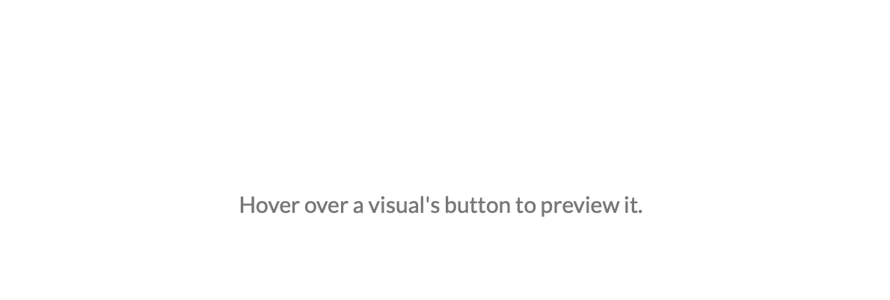

Select an interactive visual below to calculate and view codon usage biases across populations.
Interactive Visuals:

*Run your own codon usage bias analyses using the files and Python scripts provided at the Results page and our GitHub.
ABOUT
ABOUT
An interactive web for the study of codon usage bias across human populations
Codon usage bias is the unequal distribution of synonymous codons in a gene. In the central dogma of biology, genes are transcribed from DNA to RNA and then translated into polypeptide chains. During translation, ribosomes read any of 61 unique nucleotide triplets called codons and translate it to one of 20 amino acids. In this process, when an aminoacyl-tRNA binds to its complementary codon, Watson-Crick pairing rules are not always followed on the third nucleotide, causing codon “wobble.” Codon wobble allows the tRNA to bind to one of several different codons. Because of this degeneracy, multiple codons can synonymously encode the same amino acid. When these synonymous codons are present in different frequencies, it is referred to as codon usage bias.
DNA Codon to Amino Acid Table
There are several different types of codon usage bias:
Codon frequency: the number of times that a certain codon is present in a gene. More common codons correlate with more abundant tRNAs.
Codon aversion: when a codon is not used at all in a gene. These very rare codons correlate to very rare tRNAs.
Identical codon pairing: when a codon occurs multiple times in the same ribosome footprint. This allows for tRNA to be used reused quickly.
Co-tRNA codon paioring: when two or more synonymous (but not identical) codons occur in the same ribosome footprint. This also allows for tRNA to be used reused quickly.
Ramp sequence: a region of rare codons at the beginning of a gene that cause for slower and more efficient transcription initiation.
Codon usage biases play a very important role in the central dogma of biology because they affect
The speed and efficiency of tranlsation elongation
The level of gene expresrsion
mRNA secondary structure
Protein secondary structure
Genetic diseases and disorders
Population-specific codon usage biases have been little studied, despite increasing analytical resources. We present this web server, Codon Usage Bias Across Populations (CUBAP), to facilitate analyses of codon usage biases across different human population groups. Using data from the 1000 Genomes Project, we calculate codon frequencies, codon aversion, identical codon pairing, and co-tRNA codon pairing for 17,635 genes from 2,504 individuals spanning 26 populations.